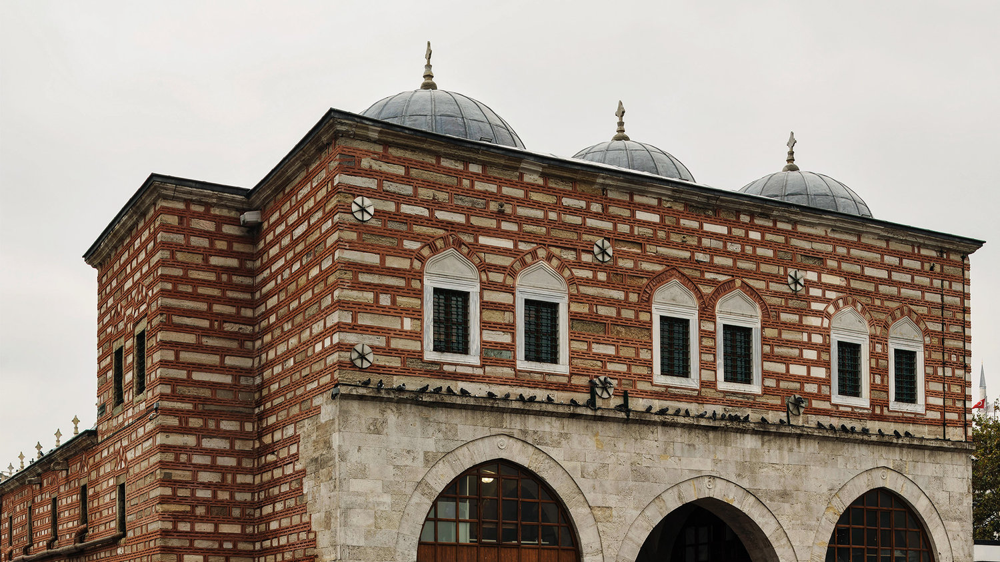

Pandeli, Niğdeli Rumlardan. Küçük yaşta geldiği İstanbul'da baba mesleği olan hamallık dışında bulaşıkçılık, berber ve bakkal çıraklığı gibi işler yapıyor. Fakat bakıyor ki, işler az… Mısır Çarşısı’nın arkasındaki Mercan Yokuşu’nda seyyar bir arabada piyazcılık yapmaya başlıyor, ilk köfteci dükkânını da Çukur Han’da ufak bir barakada açıyor ve hamallara köfte ekmek satıyor.
Birinci Dünya Savaşı’nın İstanbul’unda, Pandeli’nin Hamal Lokantası’na, dönemin entelektüelleri; gazeteciler, şairler, yazarlar ve politikacılar gitmeye başlıyor. Kısa zamanda lokanta herkesin sevdiği bir mekan oluyor. Fakat Pandeli, Balkan Savaşı ve ardından 1.Dünya Savaşı şartlarıyla baş edemeyince Niğde’ye dönmek zorunda kalıyor. Savaştan sonra tekrar İstanbul’a geliyor ve 1926 yılında Eminönü'ndeki Yağcılar İskelesi'nde üç katlı bir binada lokantasını tekrar açıyor. O yıllarda, Mustafa Kemal Atatürk Ankara günlerinde Pandeli’nin mutfağını özlüyor, Ankara’da misafir ağırlayacağı bazı dönemlerde özel siparişleri, İstanbul’dan trene veriliyor.
Pandeli II. Dünya Savaşı gibi zor zamanlarda karşılaştığı güçlüklerle savaşmayı biliyor, un stokları daralınca havanlarda pirinç döverek ekmek yapıyor. Savaşın bitmesiyle tam rahatlama sürecindeyken, bu sefer de 6-7 Eylül olayları sırasında ne yazık ki Pandeli’nin Lokantası da yağmalanıyor. O da, çok sevdiği mesleğine ve hayata küsüyor. Pandeli’nin mesleği bıraktığını gazete manşetlerinden öğrenen dönemin Cumhurbaşkanı Celal Bayar ve Başbakanı Adnan Menderes, meşhur ustayı ikna ediyor ve Mısır Çarşısı girişindeki üst kat Pandeli Lokantası’na devlet emriyle tahsis ediliyor. Bunun üzerine Pandeli Usta, oğlu Hristo ile birlikte ellerindeki kısıtlı bütçeyle hem yağmalanan Yağcılar İskelesi’ndeki mekânı hem de mülkiyeti Vakıflar Genel Müdürlüğü’ne ait yeni Pandeli Lokantası’nı ayağa kaldırıyor. Kısa bir süre, Pandeli iki dükkânla yola devam ediyor. Yerli-yabancı tüm turist rehberlerinde ve gezginlerin satırlarında yer alan Pandeli, haklı şöhretine bir de Türkiye’nin ilk turizm belgeli restoranı unvanını ekliyor. 1958 yılında şehircilik çalışmaları esnasında Yağcılar İskelesi’ndeki lokanta yıkılınca, Mısır Çarşısı girişindeki Pandeli Lokantası bu tarihten itibaren Eminönü’ndeki geleneğin yegâne temsilcisi oluyor.
1967 yılında Pandeli yaşama gözlerini yumunca, lokantanın işletme sorumluluğunu Pandeli’nin oğlu Hristo Çobanoğlu ve çocuk yaşta lokantada işe başlamış Cemal Biberci üstleniyor ve restoran günümüze kadar geliyor.